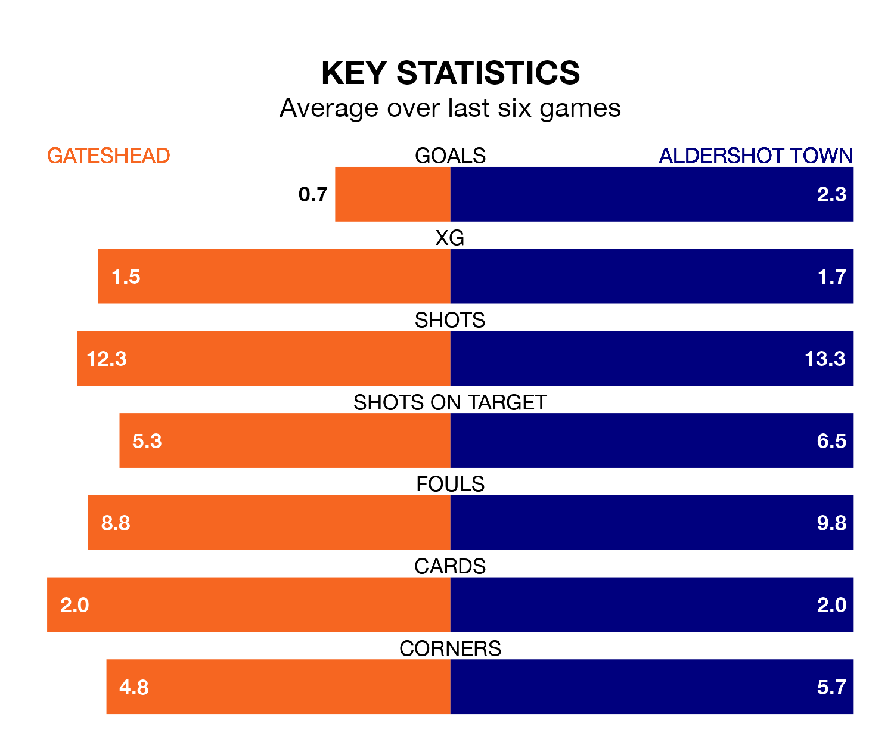

Saturday's match between Gateshead and Aldershot Town promises to be one for the neutrals, as two of the National League's most free-scoring sides go head-to-head.
Ahead of the game at the Gateshead International Stadium, the Tynesiders and the Shots sit joint-fourth and third in the goal-scoring charts, with 54 and 56 goals respectively.
Striker Marcus Dinanga Nyamabu leads the way for the home side, having bagged 13 goals in their 30 games to date.
And Lorent Tolaj has been the main man in the opponents' penalty box for Aldershot, with 14 goals.
In the last 10 years, Gateshead and Aldershot have played each other on 14 occasions. Gateshead won seven of them, Aldershot four, and they drew three times.
On average, the Tynesiders scored 1.4 goals and the Shots 1.2 in those matches.
Their last meeting was on September 16, when they played out a 1-1 draw.
Aldershot are sixth in the table after 31 games, of which they have won 14 and drawn six, earning 48 points.
Gateshead are one place behind Town in seventh, with 13 wins and eight draws putting them on 47 points.
The Tynesiders are in mixed form in the National League, with two wins and a draw from their last six games.
With three wins and two draws over that period, the Shots' form is better – they have taken 11 points from 18, compared to the hosts' seven.
Gateshead's last match was on Tuesday, a 1-1 draw against Eastleigh, with Luke Hannant getting the goal for the Tynesiders.
Aldershot beat Halifax Town 2-1 last time out, on February 3, with Kwame Thomas and Tolaj on the scoresheet.
Updated: 11:43 (UTC), 08/02/24